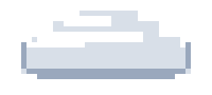

Condensación
Al subir, el vapor encuentra aire cada vez más frío. Las moléculas pierden energía y vuelven a unirse formando gotitas microscópicas que se agrupan alrededor de partículas de polvo.

El resultado son las nubes. Una nube no es humo: son millones de gotas de agua líquida flotando juntas.
| Tipo | Altura | Aspecto |
|---|---|---|
| Cirros | Alta (>6 km) | Finos, blancos |
| Cúmulos | Media (2–6 km) | Algodonosos |
| Estratos | Baja (<2 km) | Grises y planas |